Inside the projects.
Hardware photographs, PCB renders, schematics and recorded simulation results extracted from the original project reports.
Proteus simulation
DC Motor Speed Control
Original project documentation. Additional figures may show schematics or simulations; they do not establish new hardware validation.

MATLAB results
EEG Signal Cleaning
Original project documentation. Additional figures may show schematics or simulations; they do not establish new hardware validation.

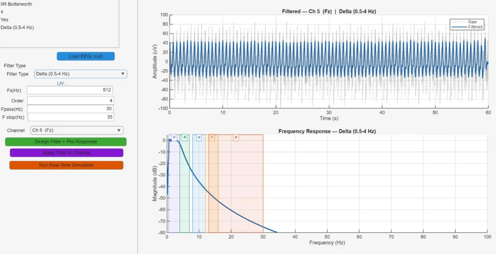
PCB render
ESP32 Modular PCB Design
Original project documentation. Additional figures may show schematics or simulations; they do not establish new hardware validation.

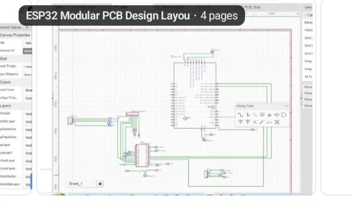
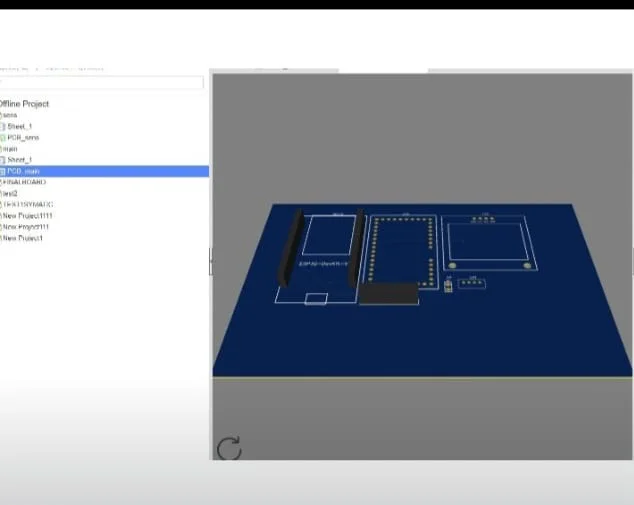
Hardware prototype
FM Receiver
Original project documentation. Additional figures may show schematics or simulations; they do not establish new hardware validation.

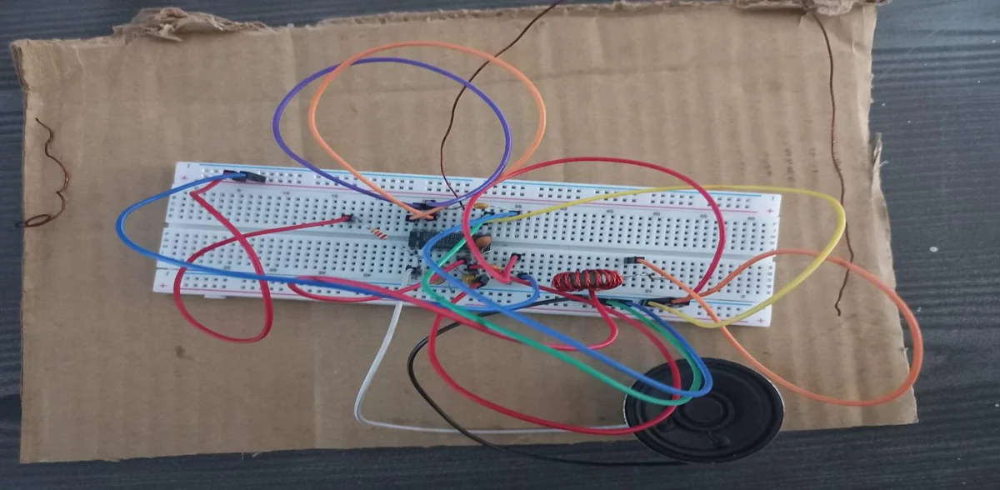
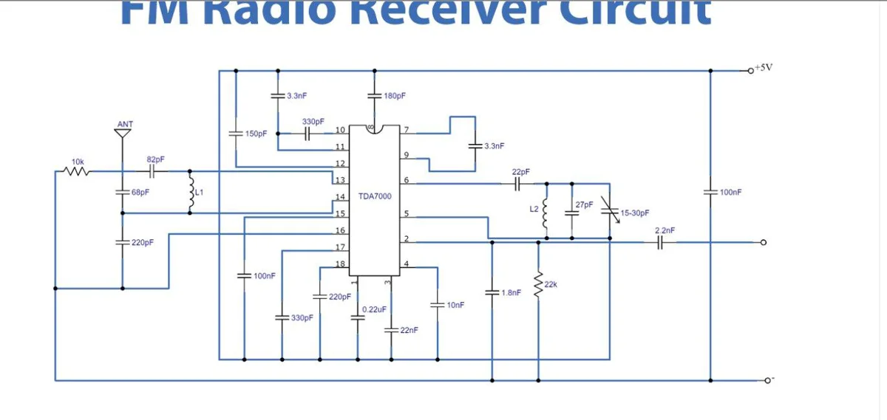
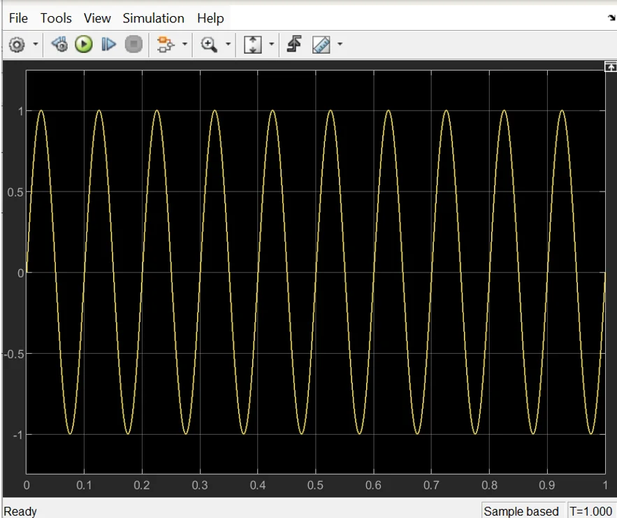
MATLAB / Simulink
5-Band Graphic Equalizer
Original project documentation. Additional figures may show schematics or simulations; they do not establish new hardware validation.

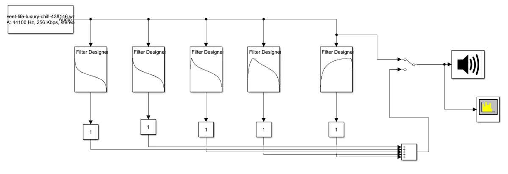
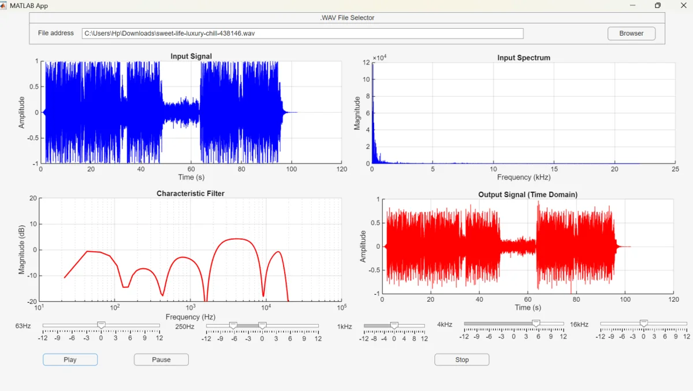
Hardware prototype
4-Bit Arithmetic
Original project documentation. Additional figures may show schematics or simulations; they do not establish new hardware validation.

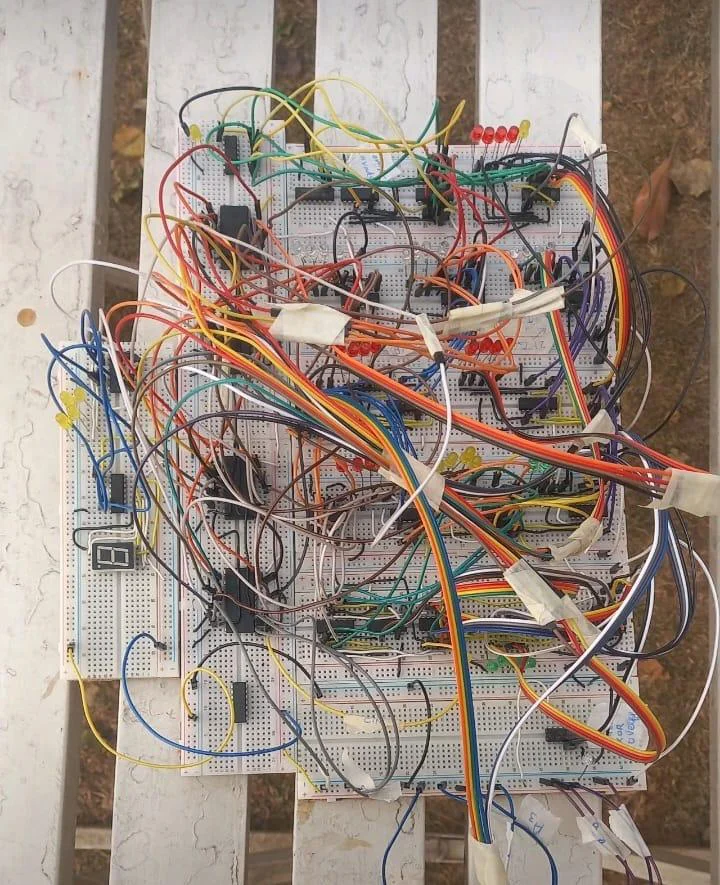
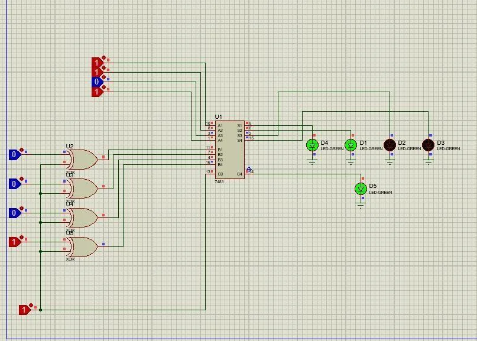
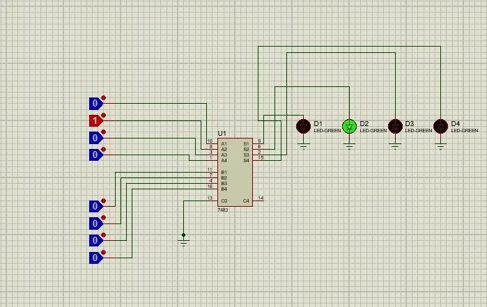
CAD drawing
CAD Design Collection
Original project documentation. Additional figures may show schematics or simulations; they do not establish new hardware validation.

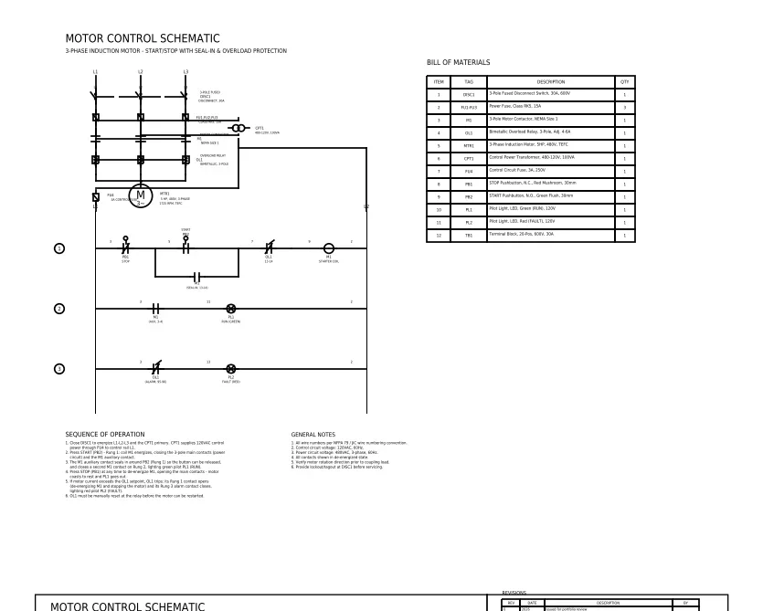
Proteus simulation
Multi-Range Digital Voltmeter
Original project documentation. Additional figures may show schematics or simulations; they do not establish new hardware validation.

Hardware prototype
RFID Door Lock
Original project documentation. Additional figures may show schematics or simulations; they do not establish new hardware validation.

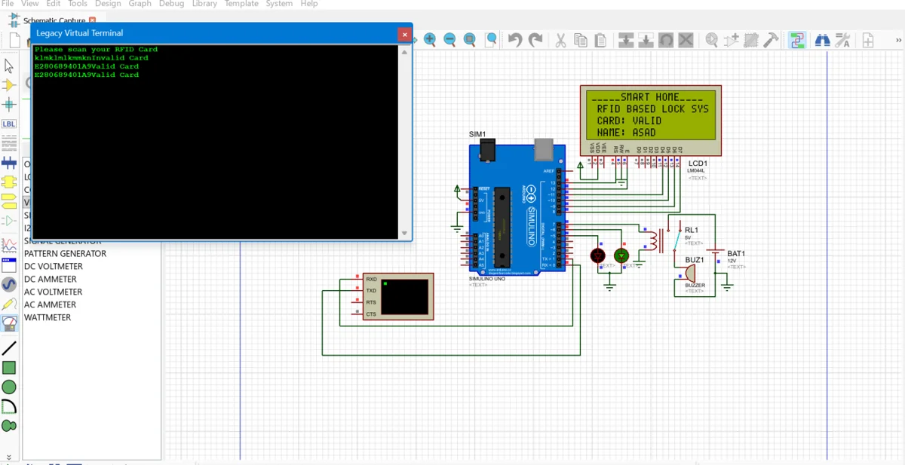
Circuit simulation
2nd Order Active
Original project documentation. Additional figures may show schematics or simulations; they do not establish new hardware validation.

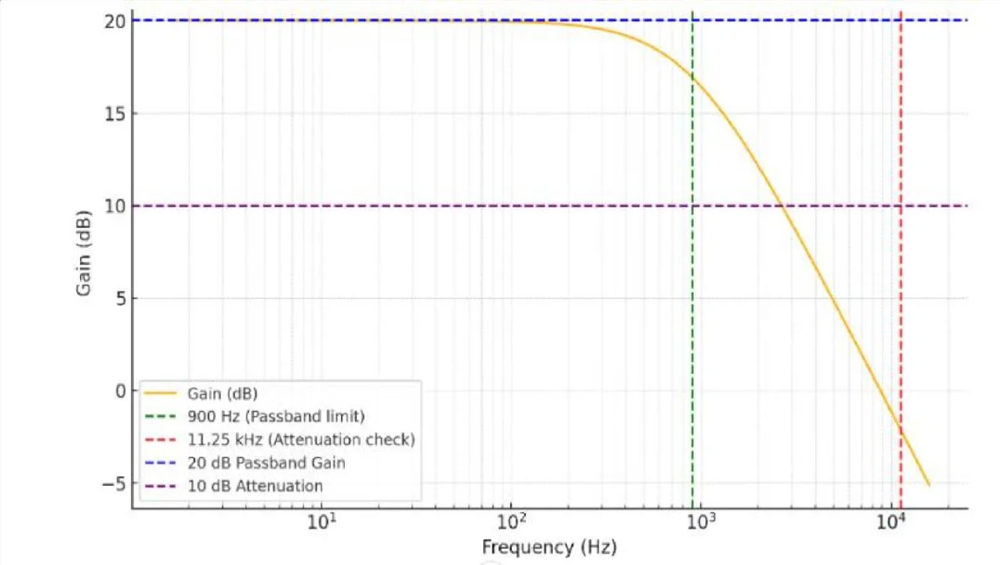
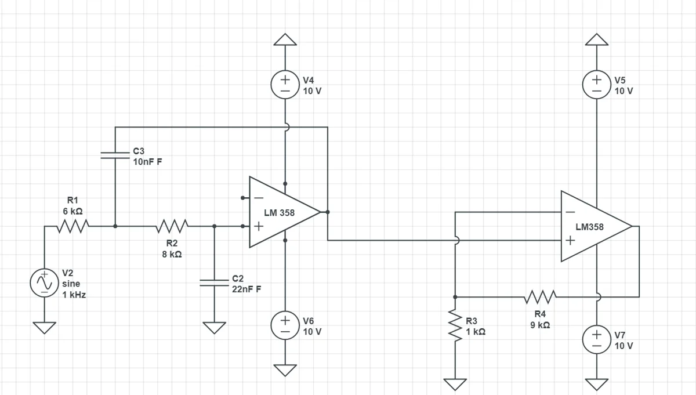
Hardware prototype
Smart Parking
Original project documentation. Additional figures may show schematics or simulations; they do not establish new hardware validation.

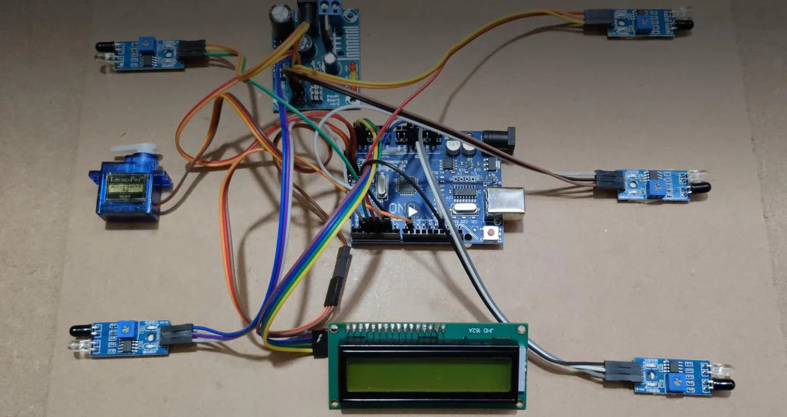
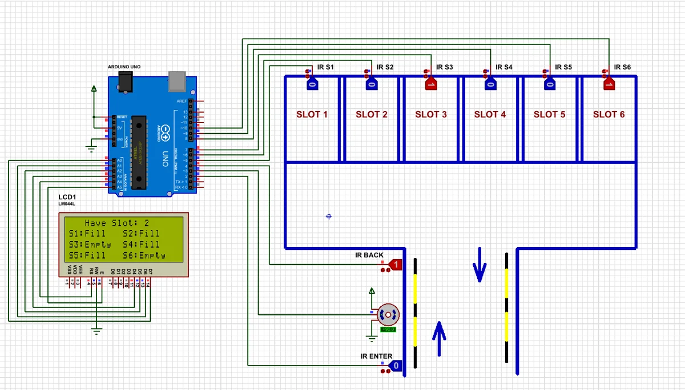
Hardware prototype
Dual-Axis Solar
Original project documentation. Additional figures may show schematics or simulations; they do not establish new hardware validation.

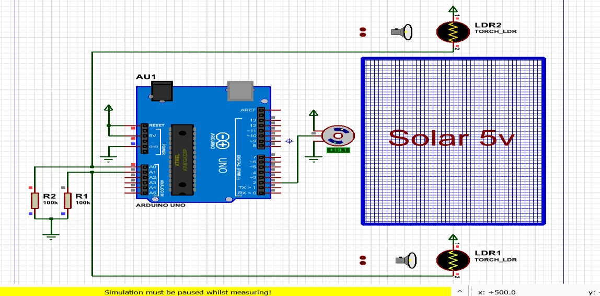
Hardware prototype
IoT Fleet Management
Original project documentation. Additional figures may show schematics or simulations; they do not establish new hardware validation.

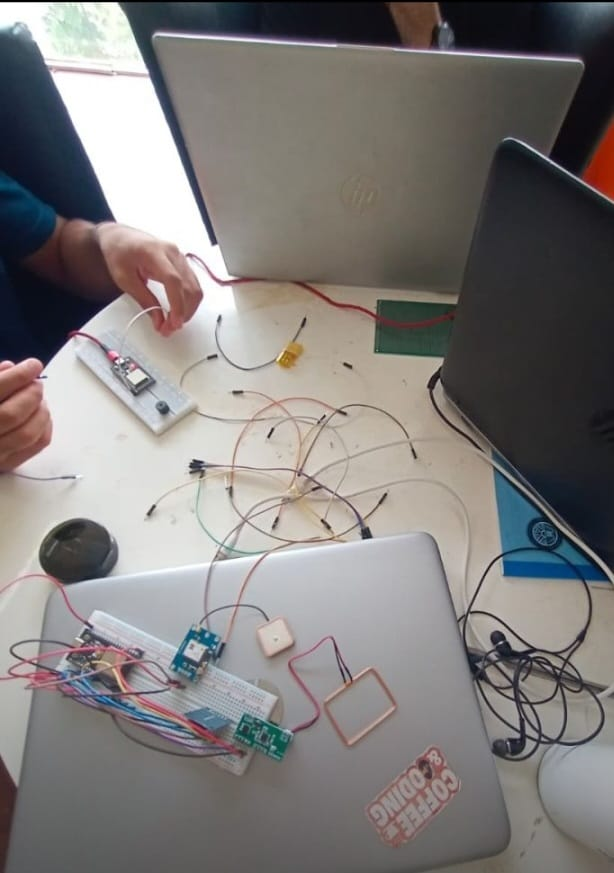